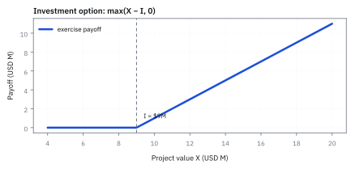
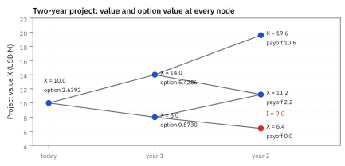
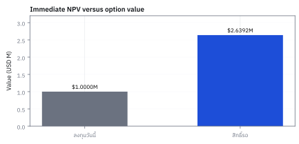
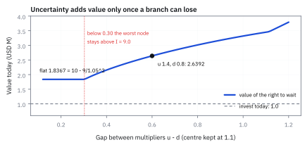
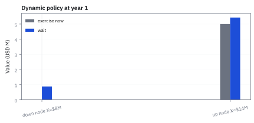

23.1 Real Options and Dynamic Programming
สิทธิ์ในการรอ ลงทุน หรือหยุดโครงการเมื่อข้อมูลใหม่เข้ามา
โครงการมูลค่า \$10.0 ล้าน ต้องลงทุน 9.0 ล้าน ลงวันนี้ได้ net present value (NPV) 1.0 ล้าน ถ้าเลื่อนได้สองปี มูลค่าปีละคูณ 1.4 หรือ 0.8 ดอกเบี้ย 5% สิทธิ์ที่จะรอนี้มีค่าเท่าไร?
เฉลย: \$2.6392 ล้าน มากกว่าลงทุนทันที 1.6392 ล้าน เพราะถ้ารอ กิ่งที่มูลค่าตกเหลือ 6.4 ล้านเราไม่ลงทุน แต่กิ่ง 19.6 ล้านยังเก็บไว้ สิทธิ์ที่จะรอ ขยาย หรือหยุดโครงการแบบนี้เรียก real option และวิธีคิดย้อนจากปลายทางเรียก dynamic programming
ศัพท์ที่ต้องรู้ก่อนเริ่ม
- real option
- สิทธิ์แต่ไม่ใช่หน้าที่ในการตัดสินใจเรื่องสินทรัพย์จริง เช่น ลงทุน ขยาย หยุด หรือเลื่อนโครงการ ใช้วัดมูลค่าความยืดหยุ่นเมื่อข้อมูลอนาคตยังไม่ครบ
- net present value (NPV)
- มูลค่าปัจจุบันของกระแสเงินสดโครงการหักเงินลงทุน ใช้เป็นเกณฑ์ว่าถ้าต้องตัดสินใจทันทีโครงการสร้างมูลค่าเหนือเงินทุนหรือไม่
- dynamic programming
- วิธีแก้ปัญหาที่แบ่งการตัดสินใจหลายช่วงเวลาเป็นปัญหาย่อยแล้วคำนวณย้อนกลับจากอนาคต ใช้เลือก action ที่ดีที่สุดเมื่อ state เปลี่ยนได้
- decision tree
- แผนผังที่แยก state ของโลกและ action ในแต่ละเวลา ใช้ทำให้ทางเลือกในการลงทุนและ payoff ที่ปลายกิ่งตรวจสอบทีละกิ่ง
- state variable
- ตัวแปรที่สรุปข้อมูลปัจจุบันของระบบ ใช้บอกสถานะเพื่อคำนวณการตัดสินใจในอนาคต เช่น มูลค่าโครงการหรือราคาทองคำ
- continuation value
- มูลค่าของการยังไม่ใช้สิทธิ์และรอไปช่วงถัดไป ใช้เปรียบเทียบกับมูลค่าการ exercise ทันทีในแต่ละ state
- exercise
- การใช้สิทธิ์ของ real option เช่น จ่ายเงินลงทุนเพื่อเริ่มโครงการ ใช้เปลี่ยน option ให้เป็นสินทรัพย์ที่สร้างกระแสเงินสด
- risk-neutral probability
- น้ำหนักเชิงราคาที่ทำให้ discounted expected value เดินตาม no-arbitrage ใช้คำนวณราคา option ไม่ใช่ความน่าจะเป็นเชิงพยากรณ์
- no-arbitrage
- หลักที่ไม่เปิดให้สร้างกำไรแน่นอนโดยไม่รับความเสี่ยงและไม่ใช้เงินสุทธิ ใช้เป็นเหตุผลว่ากระแสเงินสดที่จำลองได้ต้องมีราคาสอดคล้องกัน
- sunk cost
- ต้นทุนที่จ่ายไปแล้วและเรียกคืนไม่ได้ ใช้เตือนว่าการตัดสินใจปัจจุบันควรเทียบ incremental cash flow ไม่ใช่พยายามกู้เงินเก่าคืน
- martingale
- กระบวนการที่ค่า discounted ในอนาคตมี expected value เท่ากับค่าปัจจุบัน ใช้ตรวจความสอดคล้องของ pricing measure กับ no-arbitrage
- convexity
- ความโค้งที่ทำให้ upside และ downside ไม่ชดเชยกันเป็นเส้นตรง ใช้อธิบายว่าการมีสิทธิ์ไม่ลงทุนช่วยจำกัดผลขาดทุน
- volatility
- ขนาดการกระจายของการเปลี่ยนแปลงราคา ใช้บอกความกว้างของ state และมูลค่าของ option ที่มี downside จำกัด
- strike
- ค่าหรือราคาที่กำหนดไว้เป็นเส้นแบ่งของการใช้สิทธิ์ ใช้เทียบกับ project value เพื่อดูว่า exercise แล้วคุ้มหรือไม่
- payoff
- เงินที่สิทธิ์หรือสัญญาจ่ายเมื่อเกิด state หนึ่ง ใช้เป็นปลายทางของ decision tree ก่อน discount กลับมาวันนี้
- backward induction
- กระบวนการคำนวณย้อนหลังจากเวลาสิ้นสุดมาสู่วันนี้ ใช้หา optimal policy และมูลค่าของ option ในแต่ละ node
- American option
- สัญญา option ที่ให้สิทธิ์ exercise ณ เวลาใดก็ได้ก่อนหรือในวันหมดอายุ ใช้จำลองทางเลือกของผู้บริหารที่ลงมือเมื่อใดก็ได้
- optimal stopping
- กฎเกณฑ์การตัดสินใจว่าจะหยุดเพื่อรับผลตอบแทนทันทีหรือรอต่อไป ใช้เลือกจังหวะ exercise ที่สร้างมูลค่าสูงสุด
สัญกรณ์และหน่วย
| สัญลักษณ์ | ความหมาย | หน่วย |
|---|---|---|
| $t$ | ลำดับเวลาของ decision date | ปี |
| $T$ | horizon สุดท้ายของ option | ปี |
| $X_t$ | มูลค่าปัจจุบันของโครงการก่อนจ่ายเงินลงทุน ณ เวลา t | USD |
| $I$ | เงินลงทุนเพื่อ exercise โครงการ | USD |
| $u,d$ | ตัวคูณ up และ down ของ state value ในหนึ่งช่วงเวลา | ไม่มีหน่วย |
| $R$ | gross risk-free growth factor ต่อหนึ่งช่วงเวลา | ไม่มีหน่วยต่อช่วงเวลา |
| $q$ | risk-neutral probability ของ up state | ไม่มีหน่วย |
| $V_t(X_t)$ | มูลค่าของ real option ณ state และเวลา t | USD |
| $\tau$ | เวลาที่ตัดสินใจ exercise เป็นครั้งแรก | ปี |
ที่มาที่ไป: การลงทุนที่มีสิทธิ์เลือก ไม่ใช่ภาระผูกพัน
วิธีประเมินโครงการแบบดั้งเดิมคำนวณมูลค่าปัจจุบันสุทธิของกระแสเงินสดแล้วดูว่าเป็นบวกหรือไม่ ซึ่งตั้งอยู่บนสมมติฐานว่าตัดสินใจลงทุนครั้งเดียวแล้วต้องดำเนินการไปตลอด
ลองดูผู้ถือสัญญาเช่าเหมืองทองคำที่มีต้นทุนขุด \$200 ต่อออนซ์ หากราคาทองในตลาดร่วงลงเหลือ \$150 ต่อออนซ์ ผู้บริหารไม่จำเป็นต้องเดินหน้าขุดทองปีละ 10,000 ออนซ์ให้ขาดทุนออนซ์ละ \$50 แต่สามารถเลือกหยุดขุดชั่วคราวได้โดยไม่มีค่าปรับ
ความยืดหยุ่นของผู้บริหารในการรอ ขยาย ย่อขนาด หรือหยุดดำเนินการ คือสิทธิ์เลือกบนสินทรัพย์จริงที่เรียกว่า real option สิทธิ์เหล่านี้มีมูลค่าเพิ่มขึ้นเมื่อความไม่แน่นอนสูงขึ้น เพราะผู้บริหารตัด downside ออกได้
ตัวอย่างที่เจอจริง: โรงงานที่มีกำลังผลิตเหลือมีสิทธิ์ขยายเมื่อยอดขายขึ้น เจ้าของแหล่งน้ำมันมีสิทธิ์เจาะทุกงวดจนสัญญาหมด ยาใหม่ผ่านการทดลองทีละขั้นและหยุดได้ทุกขั้น โรงงานให้ผู้ผลิตรายอื่นเช่ากำลังผลิตได้ หัวข้อนี้คำนวณเหมืองทองกับการอัปเกรดเครื่องจักร ส่วนหัวข้อ 23.2 ทำคลังก๊าซกับการเช่าโรงไฟฟ้า
โครงการจริงเผชิญความไม่แน่นอน 5 ด้านหลัก ได้แก่ ตลาด อุตสาหกรรม เทคนิค องค์กร และการเมือง เช่น โครงการวิจัยและพัฒนาอาจมี NPV ติดลบในขั้นทดลอง แต่แฝง growth option ในการต่อยอดเชิงพาณิชย์หากการทดลองสำเร็จ วิธีรับมือไม่ใช่เดาให้แม่นขึ้น แต่ใส่สิทธิ์เลือกเข้าไปในโครงการ การบริหารโครงการจึงคือการบริหารความยืดหยุ่น
ทำไม NPV แบบจุดเดียวตอบไม่พอ
สมมติโครงการวันนี้ต้องใช้เงินลงทุน \$9.0 ล้าน ขณะที่มูลค่าโครงการปัจจุบันอยู่ที่ \$10.0 ล้าน หากบังคับตัดสินใจทันทีจะได้ NPV เท่ากับ \$1.0 ล้าน
แต่หากโครงการมีสิทธิ์รอได้หนึ่งปี เราอาจพบว่าราคาผลผลิตดีขึ้นจนมูลค่าโครงการพุ่งเป็น \$14.0 ล้าน หรือแย่ลงจนเหลือ \$8.0 ล้าน หากปีหน้ามูลค่าเหลือ \$8.0 ล้าน เราเพียงเลือกไม่ลงทุน ทำให้ไม่เสียเงิน \$9.0 ล้าน
การรอช่วยคัดทิ้งทางเลือกที่ขาดทุนออกไป เงินลงทุนจึงทำหน้าที่เหมือน strike price ของ call option การประเมินโครงการด้วย NPV แบบจุดเดียวจึงมองข้ามมูลค่าของสิทธิ์ในการรอไปอย่างน่าเสียดาย
ขั้นที่ 1 — นิยามของเงินที่ได้ถ้าลงทุนทันที
หากตัดสินใจลงทุน ณ เวลา $t$ ผู้บริหารจ่ายเงินลงทุน $I$ เพื่อรับมูลค่าโครงการ $X_t$ หากมูลค่าโครงการต่ำกว่าเงินลงทุน ผู้บริหารเลือกไม่ลงทุนและไม่เสียเงิน payoff จึงไม่ต่ำกว่าศูนย์ โครงสร้างนี้เหมือนกับ payoff ของ call option โดยมีมูลค่าโครงการเล่นบทของราคา underlying และเงินลงทุนเป็นราคา strike
$E_t$ คือ payoff จากการ exercise ณ เวลา $t$; $X_t$ คือมูลค่าโครงการก่อนลงทุนและมีหน่วย USD; $I$ คือเงินลงทุน USD; function max ทำให้ผู้ถือเลือกไม่ลงทุนได้เมื่อส่วนต่างติดลบ
ก่อนใช้น้ำหนัก Q ต้องมีอะไรให้ hedge
แบบฝึกนี้สมมติว่ามูลค่าโครงการก่อนลงทุนมีสินทรัพย์ซื้อขายได้ที่เลียนแบบ cash flow และความเสี่ยงของมันได้ จึงใช้หลัก no-arbitrage สร้าง pricing weight แบบบทที่ 14 ได้ อีกสมมติฐานคือไม่มี cash flow ที่เสียไประหว่างรอ และยังมีสิทธิ์ลงทุนครบสองปี
ถ้าโครงการซื้อขายหรือ hedge ไม่ได้ครบ เช่นเครื่องอบของร้านเล็ก ค่า $q$ จากสูตรไม่ใช่ราคายุติธรรมที่ตลาดบังคับให้มีค่าเดียว ต้องใช้ scenario โลกจริงร่วมกับเกณฑ์รับความเสี่ยงหรือ stochastic discount factor ที่อธิบายได้ โครงคิดย้อนกลับยังใช้ได้ แต่ตัวเลข valuation ต้องมีฐานรองรับเพิ่ม
ขั้นที่ 2 — นิยามของโครงตาข่ายสองสถานะ และเงื่อนไขที่ตัวเลขต้องผ่าน
บรรทัดนี้เป็น นิยาม ของแบบจำลองที่เราเลือก ไม่ใช่ผลที่พิสูจน์ มูลค่าโครงการขยับได้สองทาง คือคูณด้วยตัวคูณขาขึ้นหรือขาลง เงื่อนไขในบรรทัดเดียวกันสำคัญกว่าตัวแบบจำลอง: ตัวคูณขาลงต้องน้อยกว่าการฝากเงิน และขาขึ้นต้องมากกว่า ถ้าไม่เป็นแบบนั้น จะมีทางทำกำไรฟรีทันที เช่นถ้าขาลงยังดีกว่าฝากเงิน ก็กู้มาลงทุนได้ไม่จำกัด ซึ่งแปลว่าแบบจำลองไม่สมเหตุสมผล และต้องแก้ตัวเลขก่อนทำอะไรต่อ
$X_0$ คือมูลค่าเริ่มต้น USD; $u$ และ $d$ เป็นตัวคูณไม่มีหน่วย; $R$ คือเงินหนึ่งดอลลาร์ที่โตเป็นเท่าไรในหนึ่งปี; เงื่อนไข $d \lt R \lt u$ ป้องกัน risk-neutral probability ติดลบหรือเกินหนึ่ง
ขั้นที่ 3 — หา pricing weight
เมื่อจะตั้งราคาด้วยการถ่วงน้ำหนักแล้วคิดลด น้ำหนักนั้นถูกบังคับ ไม่ได้เลือกเอง หกบรรทัดนี้แสดงว่ามันคือคำตอบของสมการเดียว และเงื่อนไขที่ดูเหมือนข้อกำหนดทางเทคนิค ในขั้นที่ 2 แท้จริงคือเงื่อนไขว่าน้ำหนักต้องใช้ได้จริง
เงื่อนไขที่กำหนดน้ำหนักคู่นี้มีข้อเดียว ถ้าใช้มันถ่วงสองสถานะแล้วคิดลด ต้องได้ราคาของตัวโครงการเองกลับมาถูกต้อง ไม่อย่างนั้นมันใช้ตั้งราคาอะไรไม่ได้เลย
แทนสองสถานะจากขั้นที่ 2 แล้วตัดมูลค่าตั้งต้นออกทั้งสองข้าง เหลือสมการที่มีตัวไม่รู้ค่าตัวเดียว ย้ายข้างและหารก็จบ
บรรทัดสุดท้ายคือเหตุผลที่เงื่อนไขในขั้นที่ 2 ต้องจริง ถ้าตัวคูณขาลงไม่น้อยกว่าการฝากเงิน น้ำหนักที่ได้จะติดลบ ซึ่งใช้เป็นน้ำหนักไม่ได้ และนั่นก็คือสถานการณ์ที่มีเงินฟรีให้เก็บพอดี
ข้อควรระวังที่ต้องย้ำทุกครั้ง $q$ ไม่ใช่โอกาสที่จะขึ้นจริง มันเป็นน้ำหนักสำหรับตั้งราคาเท่านั้น
ขั้นที่ 4 — backward induction
เริ่มจาก terminal payoff แล้วถอยกลับหนึ่งช่วงเวลา เปรียบเทียบการใช้สิทธิ์ทันทีและการรอ
$V_T$ คือ option value ที่ terminal date; $V_t$ คือค่าที่ตัดสินใจได้ ณ ปัจจุบัน; พจน์แรกคือ exercise ทันที; พจน์ที่สองคือ continuation value ที่ discount ด้วย $R$; max บังคับ optimal stopping
$H_t(X_t)$ เป็นชื่อย่อของมูลค่าการรอต่อ: เอามูลค่าขาขึ้นและขาลงถ่วงน้ำหนักด้วย $q$ และ $1-q$ แล้วหารด้วย $R$ เพื่อคิดกลับมาวันนี้ จากนั้นเทียบกับมูลค่าการตัดสินใจทันที $E_t(X_t)$
ทำไมต้องเดินถอยหลัง — เกมลูกเต๋าสามครั้ง
ทอยลูกเต๋าหนึ่งลูกได้ไม่เกิน 3 ครั้ง หลังแต่ละครั้งเลือกหยุดรับเงินเท่าแต้มที่ออก หรือทอยต่อ ถ้าเกมนี้ต้องจ่ายค่าเข้าเล่น ควรจ่ายได้ไม่เกินเท่าไร?
ทอยครั้งที่สามไม่มีทางเลือกแล้ว ต้องรับแต้มที่ออก ค่าเฉลี่ยจึงเป็น \$3.5
ถอยมาครั้งที่สอง ตอนนี้รู้แล้วว่าทอยต่อมีค่า 3.5 จึงหยุดเมื่อได้ 4, 5 หรือ 6 และทอยต่อเมื่อได้ 1, 2 หรือ 3 ซึ่งเกิดครึ่งหนึ่งของเวลา ค่าของเกมจากจุดนี้จึงเป็น 4.25
ถอยมาครั้งแรก ทอยต่อมีค่า 4.25 จึงหยุดเฉพาะเมื่อได้ 5 หรือ 6 เกมนี้วันนี้จึงมีค่า \$4.67 ถ้าทอยได้ถึง 1,000 ครั้ง เรารอแต้ม 6 ได้เกือบแน่นอน ค่าของเกมจะเข้าใกล้ 6
สังเกตว่ากฎหยุดของครั้งแรกตั้งไม่ได้เลย จนกว่าจะรู้ค่าของการทอยต่อ ซึ่งต้องคำนวณจากครั้งสุดท้ายย้อนมา บรรทัดสุดท้ายคือกฎเดียวกับขั้นที่ 4 เทียบเงินที่ได้ถ้าหยุด $\Pi(s)$ กับค่าของการรอ $H_t$ และเป็นวิธีเดียวกับการหาเวลาใช้สิทธิ์ของ American option
แล้วเอาไปใช้ทำอะไรได้จริงบ้าง
การมองการตัดสินใจลงทุนเป็นสิทธิ์ ไม่ใช่ภาระผูกพัน เปลี่ยนวิธีประเมินโครงการไปทั้งหมด
ใช้ประเมินโครงการที่เลื่อนการตัดสินใจได้ ซึ่งการรอมีมูลค่าที่วิธีมาตรฐานมองไม่เห็น
ใช้ประเมินสิทธิ์ในการขยาย ย่อ หรือปิดกิจการ ซึ่งเป็นสิทธิ์ที่ผู้บริหารมีอยู่จริง
ใช้กับการลงทุนในทรัพยากรธรรมชาติ ที่เลือกจะขุดหรือรอได้ตามราคาตลาด
ขั้นที่ 5 — ตัวเลขของโครงการโรงไฟฟ้า
ตั้งสมมติฐานที่ตรวจได้: มูลค่าโครงการก่อนลงทุนวันนี้ \$10.0 ล้าน เงินลงทุน \$9.0 ล้าน ตัวคูณ up 1.4 ตัวคูณ down 0.8 และ risk-free rate 5% ต่อปีแบบ annual compounding
$X_0$ และ $I$ เป็น USD million; $u,d$ ไม่มีหน่วย; $R=1+5\%$ คือ growth factor ของเงิน USD หนึ่งปี; horizon ของแต่ละ lattice step คือหนึ่งปี
ขั้นที่ 6 — คำนวณทุก node
คูณมูลค่าโครงการตามกิ่งก่อน แล้วคำนวณ payoff เมื่อหมดเวลารอ
$X_1^u$ และ $X_1^d$ คือมูลค่าในปี 1; $X_2^{uu},X_2^{ud},X_2^{dd}$ คือมูลค่าปี 2 ในสาม state; ทุกค่ามีหน่วย USD million
ขั้นที่ 7 — terminal exercise payoff
ใช้กฎ max ที่ปี 2: โครงการที่มูลค่าต่ำกว่าเงินลงทุนไม่ถูกเริ่ม
นำ $X_2-I$ ของแต่ละ state มาหักกัน; ค่า 10.6, 2.2 และ 0 เป็น USD million; state dd ไม่ exercise เพราะจ่ายเงินลงทุนแล้วคุ้มค่าน้อยกว่า
Figure 23.1a — สิทธิ์ที่จะไม่ลงทุนตัดขาดทุนที่ศูนย์

สามจุดคือมูลค่าโครงการปีที่ 2 จากขั้นที่ 6 ถ้าถูกบังคับลงทุนทุกกรณี กิ่งล่างสุดขาดทุน 2.6 ล้าน แต่เมื่อมีสิทธิ์เลือก กิ่งนั้นกลายเป็นศูนย์ มุมหักที่ 9.0 ล้านนี้เองที่ทำให้สิทธิ์มีค่า
ขั้นที่ 8 — continuation value ในปี 1
หา $q$ ก่อน แล้ว discount expected terminal payoff กลับมาปี 1
$q$ เท่ากับ 0.4166667 ไม่มีหน่วย; $C_1^u$ คือ continuation value ที่ up node ในปี 1; 0.5833333 คือ $1-q$; ตัวหาร 1.05 discount USD million หนึ่งปี
ขั้นที่ 9 — เปรียบเทียบ exercise กับ wait
ที่ up node การ exercise ทันทีให้ $14.0-9.0=5.0$ million USD แต่การรอให้ $5.4286$ million USD จึงควรรอ; ที่ down node exercise ให้ศูนย์และ continuation ยังมีค่า
$V_1^u$ และ $V_1^d$ คือ option value ใน up และ down node; exercise payoff ของ up คือ \$5.0 ล้าน; continuation ของ down คือ \$0.8730 ล้าน; max แสดงว่าทั้งสอง node เลือกรอ
คูณน้ำหนักก่อนหารหนึ่งปี
ทุกจำนวนเป็นล้าน USD ใช้ $q$ เท่ากับห้าในสิบสองและอีกฝั่งเจ็ดในสิบสองเพื่อไม่ปัดระหว่างทาง เอามูลค่าลูกแต่ละ node คูณน้ำหนักแล้วบวกก่อนหาร 1.05
การรอชนะในตัวอย่างนี้ส่วนหนึ่งเพราะไม่มีรายได้ระหว่างทางที่เราสละไป หากมีรายได้ที่ได้เฉพาะเมื่อลงทุนแล้ว ต้องใส่มันในทาง exercise และปรับ model ของมูลค่าโครงการให้สอดคล้องกัน จึงห้ามสรุปว่ารอชนะทุกโครงการ
ขั้นที่ 10 — มูลค่า real option วันนี้
discount ค่า option จากปี 1 กลับมาวันนี้ แล้วเทียบกับการลงทุนทันที
$V_0$ คือมูลค่าของสิทธิ์รอวันนี้ \$2.6392 ล้าน; $NPV_{now}$ คือมูลค่าถ้าบังคับลงทุนทันที \$1.0000 ล้าน; ส่วนต่าง \$1.6392 ล้าน คือ value of flexibility ภายใต้สมมติฐานนี้
Figure 23.1b — มูลค่าโครงการและค่าของสิทธิ์ทุก node

แกนตั้งคือมูลค่าโครงการจริงในแต่ละ node ข้างจุดคือค่าของสิทธิ์จากขั้นที่ 7 ถึง 10 เส้นประแดงคือเงินลงทุน 9.0 ล้าน ทั้งสอง node ของปีที่ 1 ค่าของการรอสูงกว่าการลงทุนทันที เช่นกิ่งบน 5.4286 เทียบกับ 5.0
Figure 23.1c — ลงทุนวันนี้เทียบกับถือสิทธิ์รอ

ลงทุนวันนี้ได้ 1.0 ล้าน ถือสิทธิ์รอได้ 2.6392 ล้าน ส่วนต่าง 1.6392 ล้านคือราคาของความยืดหยุ่นภายใต้ตัวเลขชุดนี้
Figure 23.1d — ความไม่แน่นอนเพิ่มค่าเมื่อไร

ตรึงจุดกึ่งกลางของตัวคูณไว้ที่ 1.1 แล้วถ่างช่องห่าง ถ้าช่องห่างไม่เกิน 0.30 กิ่งที่แย่ที่สุดยังสูงกว่า 9.0 ค่าของสิทธิ์จึงคงที่ 1.8367 ซึ่งมาจากการจ่ายเงินลงทุนช้าไปสองปีอย่างเดียว เมื่อกิ่งล่างตกต่ำกว่า 9.0 ความไม่แน่นอนจึงเริ่มเพิ่มค่า ที่ 1.4 กับ 0.8 ได้ 2.6392
ขั้นที่ 11 — กรณีศึกษาเหมืองทอง: สัญญาเช่าที่มีสิทธิ์หยุดผลิต
โจทย์ให้อะไรมาบ้าง: สัญญาเช่าเหมืองทองสิบปี ราคาทองวันนี้ \$400 ต่อออนซ์ แต่ละปีราคาคูณด้วย 1.2 หรือ 0.9 ต้นทุนขุด \$200 ต่อออนซ์ ขุดได้ปีละไม่เกินหมื่นออนซ์ อัตราดอกเบี้ย 10% เมื่อครบสัญญามูลค่าเป็นศูนย์ ทองที่ขุดในปีใดขายตอนสิ้นปีนั้นด้วยราคาต้นปี
ตัวที่เพิ่มจากตัวอย่างโครงการคือ เครื่องหมาย max ในรายได้ของแต่ละปี ซึ่งแทนสิทธิ์ที่จะหยุดขุด
น้ำหนักตั้งราคาถูกบังคับโดยต้นไม้อีกครั้ง แก้สมการเดียวได้สองในสาม โจทย์ให้โอกาสขึ้นจริง 0.75 มาด้วย แต่ตัวเลขนั้นไม่ถูกใช้เลยในการคิดราคา
ก้อนแรกของ $V_t$ คือรายได้ปีนี้ ผลต่างราคาทองกับต้นทุนขุดคูณกำลังผลิต ถ้าผลต่างติดลบก็หยุดขุด รายได้เป็นศูนย์ ไม่ใช่ขาดทุน เพราะหยุดแล้วไม่มีค่าใช้จ่าย เงินก้อนนี้ได้ตอนสิ้นปี จึงหาร 1.1 หนึ่งครั้งเพื่อคิดกลับมาต้นปี
ก้อนที่สองคือมูลค่าของสัญญาในปีหน้า ถ่วงด้วยน้ำหนักตั้งราคาแล้วคิดลดหนึ่งปี ปีที่สิบมีค่าเป็นศูนย์ การเดินถอยหลังจึงเริ่มได้ทันที
สไลด์ของ Haugh และ Iyengar เขียนรายได้ปีนี้โดยไม่หาร 1.1 เท่ากับถือว่าได้เงินตอนต้นปี ทุก node จึงใหญ่ขึ้น 1.1 เท่า บันทึกของ Luenberger และไฟล์ Excel หารทั้งก้อน หนังสือนี้ใช้แบบหลังเพราะตรงกับเงื่อนไขขายตอนสิ้นปี
ขั้นที่ 12 — ตัวเลขจากการเดินถอยหลังทั้งต้นไม้
เริ่มที่ปีที่เก้า ตรวจ node หนึ่งกลางต้นไม้ด้วยมือ แล้วอ่านค่าวันนี้
ปีที่เก้าเป็นปีสุดท้ายที่ขุด ปีที่สิบมีค่าศูนย์ มูลค่าจึงเหลือรายได้ปีเดียวที่คิดลดแล้ว กิ่งบนสุดราคา $400(1.2)^{9}=2{,}063.91$ ขุดเต็มกำลังได้ 16.94 ล้าน กิ่งล่างสุด $400(0.9)^{9}=154.97$ ต่ำกว่าต้นทุน จึงหยุดขุดและได้ศูนย์พอดี ไม่ติดลบ
ก้อนกลางตรวจ node หนึ่งด้วยมือ ปีที่ 6 ราคา 503.88 ขุดได้ 3.04 ล้าน ค่าของปีหน้าคือ $V_7$ ที่ราคา 604.66 และ 453.50 ซึ่งได้จากรอบก่อนหน้า ถ่วงสองในสามกับหนึ่งในสาม บวกรายได้ แล้วหาร 1.10 ได้ 11.98 ล้าน ตรงกับ 12.0 ล้านในตารางของบันทึกต้นทาง
ทำซ้ำแบบนี้ทุก node จนถึงวันนี้ได้ \$24,074,547 ตรงกับไฟล์ Excel ถ้าใช้สูตรในสไลด์ที่ไม่หารรายได้ จะได้ 26,482,002 ซึ่งคือ 1.1 เท่าพอดี
คำตอบ — ลงทุนวันนี้ หรือเก็บสิทธิ์รอสองปี
คำถาม: โครงการมูลค่า \$10.0 ล้าน ต้องลงทุน 9.0 ล้าน มูลค่าปีละคูณ 1.4 หรือ 0.8 ดอกเบี้ย 5% ถ้าเลื่อนได้สองปี สิทธิ์ที่จะรอมีค่าเท่าไร และควรลงทุนวันนี้หรือไม่?
ของที่มี: ขั้นที่ 5 ถึง 10
1 ต้นไม้: ปีที่ 1 เป็น 14.0 หรือ 8.0 ล้าน ปีที่ 2 เป็น 19.6, 11.2 หรือ 6.4 ล้าน
2 ปีที่ 2 ลงทุนเฉพาะกิ่งที่คุ้ม ได้ 10.6, 2.2 และ 0 ล้าน ใช้น้ำหนักตั้งราคา $q=5/12$ ถ่วงทุกกิ่ง
3 ปีที่ 1 กิ่งบนรอได้ 5.4286 มากกว่าลงทุนทันที 5.0 กิ่งล่างรอได้ 0.8730 มากกว่า 0
4 วันนี้สิทธิ์รอมีค่า 2.6392 ล้าน ลงทุนทันทีได้ 1.0 ล้าน จึงยังไม่ลงทุน ส่วนต่าง 1.6392 ล้านคือค่าของความยืดหยุ่น
ตรวจเองใน 10 วินาที: 5/12 ของ 5.4286 คือ 2.2619 และ 7/12 ของ 0.8730 คือ 0.5093 รวม 2.7712 หาร 1.05 ได้ 2.6392
แปลว่าอะไร: NPV เป็นบวกไม่ได้แปลว่าต้องลงทุนวันนี้ ทีมจัดสรรเงินทุนต้องถามก่อนว่าโครงการเลื่อนได้หรือไม่ ถ้าคู่แข่งอาจลงมือก่อน หรือมีรายได้ที่เสียไปทุกปีที่รอ ต้องใส่ต้นทุนนั้นในทางรอก่อนตัดสิน
ทางเลือกในการอัปเกรดเครื่องจักร: สิทธิ์การลงทุนเสริม
ในกรณีศึกษาเหมืองทอง Simplico ผู้ถือสัญญามีทางเลือกเพิ่มเติมคือ การซื้อเครื่องจักรใหม่ด้วยเงินลงทุน \$4 ล้าน ณ เวลาใดก็ได้ระหว่างปีที่ 0 ถึงปีที่ 9
เครื่องจักรใหม่เพิ่มกำลังผลิตจาก 10,000 เป็น 12,500 ออนซ์ต่อปี แต่มีต้นทุนขุดเพิ่มขึ้นจาก 200 เป็น \$240 ต่อออนซ์ การอัปเกรดนี้เป็น irreversible เมื่อติดตั้งแล้วจะใช้ตลอดอายุสัญญาที่เหลือ และไม่มีมูลค่าซากเมื่อครบสัญญาปีที่ 10
ปัญหานี้คือ American option บนสินทรัพย์จริง การประเมินมูลค่าทำได้โดยคำนวณมูลค่าสัญญาเช่าบน lattice ใหม่หากมีเครื่องจักรแล้ว จากนั้นใช้ dynamic programming เลือกว่าแต่ละ node ควรอัปเกรดทันทีหรือใช้เครื่องจักรเดิมต่อไป
ขั้นที่ 13 — ประเมินมูลค่าสัญญาเช่าเมื่ออัปเกรดเครื่องจักรแล้ว
คำนวณมูลค่าสัญญาเช่าบน lattice ใหม่ที่มีกำลังผลิต $G_{\text{up}}=12{,}500$ ออนซ์ต่อปี และต้นทุน $C_{\text{up}}=\$240$ ต่อออนซ์ โดยยังไม่หักเงินลงทุน
$V_t^{\text{up}}$ คือมูลค่าสัญญาเช่าที่ใช้เครื่องจักรใหม่ตลอดทาง; กำลังผลิตสูงขึ้นเป็น 12,500 ออนซ์ต่อปี แต่ต้นทุนขุดขยับขึ้นเป็น \$240 ต่อออนซ์
ที่ปีที่ 10 สัญญาสิ้นสุด มูลค่าเป็นศูนย์ทุก node เมื่อคำนวณถอยหลังด้วยน้ำหนัก $q=2/3$ และคิดลดด้วย 1.10 ได้มูลค่า ณ วันเริ่มต้นเท่ากับ \$27.02 ล้าน
ขั้นที่ 14 — dynamic programming สำหรับสิทธิ์อัปเกรดเครื่องจักร
ในแต่ละ node เปรียบเทียบระหว่างผลตอบแทนสุทธิหากอัปเกรดทันที กับมูลค่าการถือสิทธิ์และใช้เครื่องจักรเดิมต่อไป
$A_t(s)$ คือ continuation value หากยังไม่อัปเกรดและใช้เครื่องจักรเดิม; $U_t(s)$ คือมูลค่าสัญญาเช่ารวมสิทธิ์อัปเกรด; เงินลงทุน $I_{\text{up}}=\$4{,}000{,}000$
$\Delta V$ คือกำไรส่วนเกินจากการอัปเกรดทันที หาก $\Delta V > 0$ แสดงว่าควร exercise ทันที หาก $\Delta V \le 0$ ควรรอต่อไป
ขั้นที่ 15 — การตัดสินใจอัปเกรดและมูลค่า option สุทธิ
คำนวณค่าจริงตาม lattice ในไฟล์ Excel เพื่อตัดสินใจ ณ วันเริ่มต้น และหาจังหวะเวลาที่ควร exercise เครื่องจักรใหม่
ทุกก้อนของ $\Delta V$ คือ $V^{\text{up}}$ จากขั้นที่ 13 ลบเงินลงทุนสี่ล้าน แล้วลบ $A$ จากขั้นที่ 14 ที่ node เดียวกัน ตัวห้อยคือปี ใช้ node ราคาสูงสุดของปีนั้น คือ 400, 691.20 และ \$829.44 ณ เวลาเริ่มต้น $\Delta V$ ติดลบ \$1.61 ล้าน การรีบอัปเกรดทันทีจึงทำลายมูลค่า สู้เก็บสิทธิ์รอไว้ก่อนไม่ได้
เมื่อราคาทองคำขึ้นแรงจนถึง \$691.20 ในปีที่ 3 หรือ \$829.44 ในปีที่ 4 ค่า $\Delta V$ จะกลายเป็นบวก ซึ่งเป็นจุดที่ควร exercise ทันที
ตรงนี้แหละที่คนอ่านตาราง Excel ผิดกันบ่อย: แต่ละแถวในไฟล์ตรึงจำนวนครั้งที่ราคาขึ้นไว้ เดินไปทางขวาในแถวเดียวกันจึงแปลว่าราคาตกลง ไม่ใช่แค่เวลาผ่านไป ถ้าดู node ราคาสูงสุดของแต่ละปี การอัปเกรดยังคุ้มทุกปีตั้งแต่ปีที่ 3 ถึงปีที่ 8 เช่น ปีที่ 8 ราคา \$1,719.93 ได้ $\Delta V$ ราว \$2.08 ล้าน
ปีเดียวที่ไม่มี node ไหนคุ้มเลยคือปีที่ 9 เพราะเหลือการขุดอีกปีเดียว ทองส่วนเพิ่ม 2,500 ออนซ์ต้องขายได้เกินออนซ์ละ \$2,160 จึงจะคืนเงินสี่ล้าน USD ที่คิดลดแล้วได้ แต่ราคาสูงสุดที่เป็นไปได้ในปีนั้นคือ \$2,063.91
ที่วันนี้ไม่อัปเกรด มูลค่ารวมสิทธิ์ $U_0$ จึงเท่ากับทางรอ $A_0$ มูลค่าสัญญาเช่ารวมสิทธิ์อัปเกรดคือ \$24.63 ล้าน เมื่อหักมูลค่าสัญญาเดิม \$24.07 ล้าน มูลค่าของสิทธิ์อัปเกรดจึงเท่ากับ \$558,595
Figure 23.1e — node ที่ควรอัปเกรดเครื่องจักรของ Simplico

ทุกจุดคือ node ของต้นไม้ราคาทอง 10 ปี สี่เหลี่ยมเขียวคือ 10 node ที่ควรติดตั้งเครื่องใหม่ทันที เริ่มที่ \$691.20 ในปีที่ 3 ปีที่ 9 ไม่มีจุดเขียว เพราะราคาสูงสุด 2,063.91 ยังต่ำกว่า 2,160 ที่ต้องได้เพื่อคืนเงินสี่ล้าน
ความไม่แน่นอนทางการเงินเทียบกับความไม่แน่นอนในการดำเนินงาน
ในตัวอย่างเหมืองทอง Simplico ความสุ่มทั้งหมดมาจากราคาทองคำ ซึ่งเป็นสินทรัพย์ที่มีการซื้อขายและ hedge ได้ในตลาดการเงิน ทำให้เราใช้อัตราดอกเบี้ยปลอดความเสี่ยงและ risk-neutral probability ในการตั้งราคาได้ตรงไปตรงมา
แต่ในโครงการลงทุนจริง มักมีความไม่แน่นอนที่ไม่ใช่ความเสี่ยงทางการเงินเข้ามาเกี่ยวข้อง เช่น ปริมาณสำรองแร่ทองคำใต้ดินที่อาจไม่ตรงกับผลการสำรวจทางธรณีวิทยา ความผันผวนของต้นทุนการขุดจากค่าแรงและพลังงาน หรือต้นทุนการจัดเก็บและขนส่ง
ความเสี่ยงในการดำเนินงานเหล่านี้ไม่มีสินทรัพย์ให้ทำ replication ในตลาด จึงไม่สามารถใช้สูตร no-arbitrage เพียงอย่างเดียวได้ ผู้ประเมินต้องผสาน dynamic programming เข้ากับแบบจำลอง scenario หรือ stochastic discount factor ที่สะท้อนระดับการยอมรับความเสี่ยงขององค์กร
จากสูตรสู่ implementation และการควบคุม
ในระบบ pricing ให้เก็บ lattice เป็น array ของเวลาและ state แล้วทำ backward induction จาก terminal node; อย่าปัดค่าระหว่าง node เพราะการปัดหลายชั้นทำให้ boundary เปลี่ยน ตรวจ unit test ด้วย one-step tree ที่คำนวณมือได้ และทดสอบ limiting cases: ถ้าความผันผวนเป็นศูนย์ option ควรเท่ากับ discounted deterministic payoff; ถ้าเงินลงทุนสูงมาก ค่า option ควรเข้าใกล้ศูนย์; ถ้าให้ exercise ได้ทันทีทุก node ต้องไม่ต่ำกว่า immediate NPV
สำหรับ risk report ให้แยก sensitivity ต่องบลงทุน อัตราดอกเบี้ย volatility horizon และ correlation กับราคาสินค้า อย่ารายงานเพียงราคาเดียว: ติดตาม exercise boundary, model version, input market data timestamp และการอนุมัติ parameter ด้วย ฝ่าย trading ใช้ option value ตัดสินใจว่าจะ lock capacity หรือรอ ส่วนฝ่าย control ต้องตรวจว่า cash flow ที่ใช้สร้างมูลค่าโครงการเป็น incremental จริงและไม่ใส่ sunk cost ซ้ำ เครื่องคิดเลขไม่ควรได้รับ promotion เป็น investment committee เพียงเพราะมันกดปุ่มเร็วกว่า
ตัวอย่างที่สอง — คำตอบและวิธีเช็ก
คำตอบ: สัญญาเช่าพื้นฐานมีมูลค่า \$24,074,547 (หรือ \$26,482,002 หากคิดเงินสดต้นปี) และเมื่อรวมสิทธิ์อัปเกรดเครื่องจักรจะมีมูลค่า \$24,633,143 โดยสิทธิ์อัปเกรดเครื่องจักรมีมูลค่าเดี่ยวเท่ากับ \$558,595
ตรวจเองใน 10 วินาที: ณ เวลาเริ่มต้น $\Delta V(0,0)=-\$1{,}611{,}460$ จึงไม่ควรรีบอัปเกรดทันที แต่ควรรอจนราคาทองขึ้นถึง \$691.20 ในปีที่ 3 หรือ \$829.44 ในปีที่ 4 ซึ่ง $\Delta V > 0$
แปลว่าอะไร: ความยืดหยุ่นของผู้บริหารมีมูลค่าเป็นตัวเงินจริง และ dynamic programming ช่วยคำนวณจังหวะ exercise ที่ดีที่สุดเพื่อไม่ทำลายมูลค่าจากการรีบลงทุนก่อนเวลา
โค้ดตรวจเกมลูกเต๋า ต้นไม้โครงการ สัญญาเช่า Simplico และสิทธิ์อัปเกรด
import numpy as np
from fractions import Fraction as F
V3 = F(21, 6) # dice: stop or throw again
V2 = F(4 + 5 + 6, 6) + F(3, 6) * V3
V1 = F(5 + 6, 6) + F(4, 6) * V2
assert V3 == 3.5 and V2 == 4.25 and abs(float(V1) - 4.6667) < 1e-4
X0, I, u, d, R = 10.0, 9.0, 1.4, 0.8, 1.05 # two-year project
q = (R - d) / (u - d)
E2 = [max(X0 * u**k * d**(2 - k) - I, 0) for k in (2, 1, 0)]
Vu = max(X0 * u - I, (q * E2[0] + (1 - q) * E2[1]) / R)
Vd = max(X0 * d - I, (q * E2[1] + (1 - q) * E2[2]) / R)
V0 = (q * Vu + (1 - q) * Vd) / R
assert abs(q - 5 / 12) < 1e-12 and np.allclose(E2, [10.6, 2.2, 0])
assert abs(Vu - 5.4286) < 1e-4 and abs(Vd - 0.8730) < 1e-4 and abs(V0 - 2.6392) < 1e-4
S0, u, d, r = 400, 1.2, 0.9, 0.10 # Simplico gold mine
q = (1 + r - d) / (u - d)
S = lambda t, k: S0 * u**k * d**(t - k)
def lease(C, G, slide=False):
V = np.zeros((11, 11))
for t in range(9, -1, -1):
for k in range(t + 1):
cash = max(S(t, k) - C, 0) * G
wait = (q * V[t + 1, k + 1] + (1 - q) * V[t + 1, k]) / (1 + r)
V[t, k] = cash + wait if slide else cash / (1 + r) + wait
return V
B, Up = lease(200, 10_000), lease(240, 12_500)
assert abs(q - 2 / 3) < 1e-12 and abs(B[0, 0] - 24_074_547) < 1
assert abs(lease(200, 10_000, slide=True)[0, 0] / B[0, 0] - 1.1) < 1e-12
assert abs(B[9, 9] - 16_944_656) < 1 and B[9, 0] == 0 and abs(B[6, 3] - 11_983_353) < 1
U = np.zeros((11, 11)); upgrade = [] # option to upgrade for 4M
for t in range(9, -1, -1):
for k in range(t + 1):
A = (max(S(t, k) - 200, 0) * 10_000 + q * U[t + 1, k + 1] + (1 - q) * U[t + 1, k]) / (1 + r)
U[t, k] = max(Up[t, k] - 4e6, A)
if Up[t, k] - 4e6 > A:
upgrade.append((t, round(S(t, k), 2)))
assert abs(Up[0, 0] - 27_021_683) < 1 and abs(U[0, 0] - 24_633_143) < 1
assert abs(U[0, 0] - B[0, 0] - 558_595) < 1 and abs(Up[0, 0] - 4e6 - U[0, 0] + 1_611_460) < 1
assert len(upgrade) == 10 and min(upgrade) == (3, 691.2) and max(t for t, _ in upgrade) == 8
assert abs((2_500 * 2_160 - 1_000_000) / 1.1 - 4e6) < 1e-6 # year-9 break-even priceโค้ดตรวจเกมลูกเต๋า 3.5, 4.25 และ 4.67 ต้นไม้โครงการที่ให้ 2.6392 สัญญาเช่า Simplico 24,074,547 ทั้งสองแบบคิดลด node ปีที่ 9 และปีที่ 6 ที่ตรวจด้วยมือ สิทธิ์อัปเกรด 558,595 สิบ node ที่ควรอัปเกรด และราคาคุ้มทุนปีที่ 9 ที่ \$2,160
กับดัก: risk-neutral probability ไม่ใช่ forecast
ค่า $q=0.4166667$ ถูกสร้างเพื่อให้การ discount สอดคล้องกับ no-arbitrage ไม่ได้บอกว่า analyst เชื่อว่าโครงการมีโอกาสขึ้น 41.66667% ในโลกจริง การประเมินลงทุนต้องใช้ scenario หรือ real-world probability แยกต่างหาก ส่วนการตั้งราคา option ต้องใช้ pricing measure และ discount curve ที่เหมาะสม อีกกับดักคือใช้ความผันผวนสูงแล้วสรุปว่า option ดีเสมอ: ถ้าโครงการมี downside cash outflow, abandonment cost, liquidity constraint หรือ capacity ที่ขยายไม่ได้ ความ convexity อาจหายไป
ข้อจำกัด: วิธีนี้สมมติอะไร และของจริงเป็นอย่างไร
| เรื่อง | วิธีนี้สมมติว่า | ของจริงเป็นอย่างไร | ผลที่ตามมาเวลาใช้งาน |
|---|---|---|---|
| การสร้างซ้ำ | มีสินทรัพย์ในตลาดที่เลียนแบบโครงการได้ | โครงการจริงมักไม่มีของแบบนั้น | การใช้ราคาที่ปรับความเสี่ยงแล้วในกรณีนี้ไม่มีฐานรองรับเท่ากับกรณี derivative |
| สิทธิ์ที่แท้จริง | เรามีสิทธิ์เลือกจริง | คู่แข่งอาจลงมือก่อนจนสิทธิ์หายไป | การรอมีต้นทุนที่แบบจำลองพื้นฐานไม่ได้คิด |
| ตัวเลขที่ใส่ | รู้ความผันผวนของมูลค่าโครงการ | ประมาณยากมากเพราะไม่มีราคาตลาด | มูลค่าที่คำนวณได้ไวต่อค่านี้มาก และค่านี้แทบจะเป็นการเดา |
แถวล่างเป็นเหตุผลที่วิธีนี้ใช้เป็นกรอบคิดได้ดี แต่ใช้เป็นตัวเลขตัดสินใจต้องระวังมาก
จุดที่บทถัดไปรับช่วง: จาก lattice เดียวสู่ commodity derivatives
lattice นี้มี state เดียวและจุดตัดสินใจห่างกันหนึ่งปี แต่โครงการพลังงานจริงมีราคาก๊าซ ราคาพลังงาน สภาพอากาศ inventory และ transmission constraint พร้อมกัน ขั้นต่อไปคือ commodity derivatives: storage ทำหน้าที่เหมือน real option ที่เลือก inject หรือ withdraw และ electricity มี price spike กับ non-storability ซึ่งทำให้ต้องเปลี่ยนจากต้นไม้ทบต้นแบบง่ายไปสู่ mean-reverting และ jump model
สรุปที่ใช้ได้จริง
- real option แยกมูลค่าการลงทุนทันทีออกจากมูลค่าความยืดหยุ่นในการรอ ขยาย ย่อ หรือหยุดดำเนินการ
- dynamic programming แก้ปัญหาจาก terminal payoff ย้อนกลับด้วย backward induction โดยเปรียบเทียบ exercise ทันทีกับ continuation value
- เกมทอยลูกเต๋า 3 ครั้งแสดงให้เห็นว่า การตัดสินใจวันนี้ต้องรู้มูลค่าของการรอ ซึ่งได้มาจากการคำนวณย้อนหลังจากปลายทางเท่านั้น
- สิทธิ์ที่จะหยุดผลิตเขียนเป็น max{s-C, 0} ในสูตร ทำให้สาขาที่ราคาต่ำกว่าต้นทุนมีค่าเป็นศูนย์ ช่วยตัด downside risk
- กรณีศึกษาเหมืองทอง Simplico: สัญญาเช่าพื้นฐานมีมูลค่า \$24,074,547 และสิทธิ์อัปเกรดเครื่องจักรมีมูลค่า \$558,595 รวมเป็น \$24,633,143
- ณ วันเริ่มต้น การรีบอัปเกรดเครื่องจักรทำลายมูลค่า \$1,611,460 เพราะการถือสิทธิ์รอมีมูลค่าสูงกว่า โดยจะเริ่มคุ้มค่าเมื่อราคาทองขึ้นถึง \$691.20 ในปีที่ 3
- horizon effect: การอัปเกรดคุ้มเฉพาะเมื่อราคาทองสูงพอกับเวลาที่เหลือ ใน lattice นี้คุ้มที่ node ราคาสูงสุดของปีที่ 3 ถึงปีที่ 8 แต่ไม่คุ้มเลยในปีที่ 9 เพราะทองส่วนเพิ่มต้องขายเกินออนซ์ละ \$2,160 ภายในปีเดียว ขณะที่ราคาสูงสุดในปีนั้นคือ \$2,063.91
- ความสุ่มของราคาทองเป็นความเสี่ยงทางการเงินที่ hedge ได้ ส่วนความไม่แน่นอนเรื่องปริมาณสำรองและต้นทุนขุดเป็นความเสี่ยงในการดำเนินงานที่ต้องใช้ scenario ร่วมด้วย